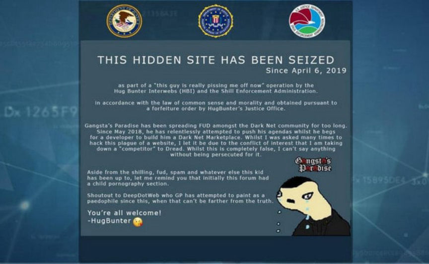
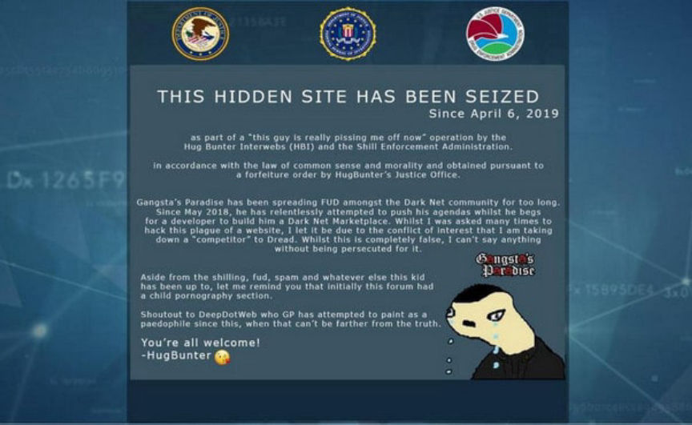

Dread Launched Two Years Ago
~2 min read | Published on 2020-02-16, tagged Dread, General-News using 451 words.
One day and two years ago, HugBunter launched Dread as a small discussion board with an expected capacity of 1,000 users. Dread now has more than 120,000 users and almost 100,000 posts, according to an official announcement from HugBunter.
HugBunter, the creator and administrator of Dread, announced the platform’s two-year anniversary on /r/dread.
The announcement highlighted Dread’s growth as well as some of the pitfalls such as the constant denial of service attacks and FUD spread by rival forum owners. Dread now has a Wikipedia entry too (although this is not that new.)
The Announcement:
This is terribly late so I do apologize, but yesterday was Dread’s 2nd Birthday anniversary since the launch on February 15th, 2018.
What a wild ride it has been in that period of time and I can’t thank you all enough for making it was it is today. There is a lot more planned from here and we hope to continue providing a great community space for a variety of discussion with privacy and anonymity respected.
To recap on a few things:
I initially intended to build Dread as a small security discussion board, extremely niche and expected a capacity of around 1,000 users, which I thought as ambitious. The need for the type of platform, based on the Reddit format became realized when some large communities were blanket banned from Reddit and it felt like there was a lot more to come, oh boy was I right.
We’ve faced every manner of FUD by many people who would have a lot to gain from Dread’s demise and have stuck to the beliefs that were the foundation of the platform, managing it as best I can whilst having tasks to work on surrounding the site every single day since.
The delusional Narco of “Gangsta’s Paradise” who set out on a crazy FUD campaign posting spam to Dread daily for a LITERAL year after launch until he took it too far and I had to put an end to his cess pool of a forum.

Full Available
He’s been quiet for a while but opened “DarkNetStats” a literal Darknet Fake News site.
The most prolific issue we have faced has definitely been the DoS attacks and whilst seemingly being the only service to actually overcome the attacks outside of mirror rotation has been a fantastic achievement, something we’re proud of and which definitely wouldn’t be possible without IQ 1000 /u/Paris
Some current stats to see the scale of things too:<thead>
Sorry this post has been so late, we have an amazing announcement coming very shortly which I hoped to have ready yesterday so held out on any posts relating to the Birthday, stay tuned for big news!
Thanks guys!
Signed Copy Here
HugBunter, the creator and administrator of Dread, announced the platform’s two-year anniversary on /r/dread.
The announcement highlighted Dread’s growth as well as some of the pitfalls such as the constant denial of service attacks and FUD spread by rival forum owners. Dread now has a Wikipedia entry too (although this is not that new.)
The Announcement:
This is terribly late so I do apologize, but yesterday was Dread’s 2nd Birthday anniversary since the launch on February 15th, 2018.
What a wild ride it has been in that period of time and I can’t thank you all enough for making it was it is today. There is a lot more planned from here and we hope to continue providing a great community space for a variety of discussion with privacy and anonymity respected.
To recap on a few things:
I initially intended to build Dread as a small security discussion board, extremely niche and expected a capacity of around 1,000 users, which I thought as ambitious. The need for the type of platform, based on the Reddit format became realized when some large communities were blanket banned from Reddit and it felt like there was a lot more to come, oh boy was I right.
We’ve faced every manner of FUD by many people who would have a lot to gain from Dread’s demise and have stuck to the beliefs that were the foundation of the platform, managing it as best I can whilst having tasks to work on surrounding the site every single day since.
The delusional Narco of “Gangsta’s Paradise” who set out on a crazy FUD campaign posting spam to Dread daily for a LITERAL year after launch until he took it too far and I had to put an end to his cess pool of a forum.

The GP Seizure Banner
Full Available
He’s been quiet for a while but opened “DarkNetStats” a literal Darknet Fake News site.
The most prolific issue we have faced has definitely been the DoS attacks and whilst seemingly being the only service to actually overcome the attacks outside of mirror rotation has been a fantastic achievement, something we’re proud of and which definitely wouldn’t be possible without IQ 1000 /u/Paris
Some current stats to see the scale of things too:
| User accounts | 121,194 |
| Available posts | 93,285 |
| Removed/Unapproved posts | 35,767 |
| Available comments | 658,119 |
| Removed/Unapproved comments | 45,685 |
| Active Communities | 574 |
| Removed/Banned Communities | 5 |
Sorry this post has been so late, we have an amazing announcement coming very shortly which I hoped to have ready yesterday so held out on any posts relating to the Birthday, stay tuned for big news!
Thanks guys!
Signed Copy Here